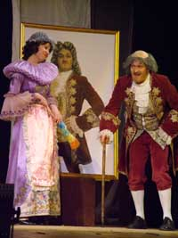

|  | Французская комическая опера-парад А. Гретри Старик Кассандр, являясь опекуном Изабеллы, не прочь приударить за ней. Изабелла, хотя и любит Леандра, который надолго куда-то уехал, по совету своей камеристки Коломбины соглашается стать женой Кассандра. Кассандр же, чтобы узнать подлинные намерения Изабеллы, решает спрятаться в доме. Тут внезапно возвращается Леандр со своим слугой Пьеро. Самое лучшее, где можно подслушать разговоры двух пар, – это заменить собой свой же портрет в картине. И когда нерешительная Изабелла репетирует свою речь перед картиной, портрет внезапно отвечает… Увертюра с хором «Вот картина, разве не прекрасна» Ариетта Изабеллы «Молода я и красива» Ариетта Коломбины «Иной сеньор седой» Ариетта Кассандра «О, как речь твоя меня окрылила» Трио Кассандра, Изабеллы и Коломбины «Мой долг быть там» Ариетта Коломбины «Что прошло, того не воротить» Дуэт Леандра и Изабеллы «Я вдали страдал вместе с вами» Квинтет Кассандра, Изабеллы, Леандра, Коломбины и Пьеро «Какой пассаж» Водевиль с хором «Весь мир ликуя славит Любовь, что нами правит» |